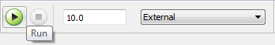

Tune and Monitor Model Running on Raspberry Pi Hardware
Overview of Using External Mode
You can use External mode to tune parameters and monitor a model running on your target hardware.
External mode enables you to tune model parameters and evaluate the effects of different parameter values on model results in real time. Doing so helps you find the optimal values to achieve desired performance. This process is called parameter tuning.
External mode accelerates parameter tuning because you do not have to rerun the model each time you change parameters. You can also use External mode to develop and validate your model using the actual data and hardware for which it is designed. This software-hardware interaction is not available solely by simulating a model.
This workflow lists the tasks usually required to tune parameters with External mode:
In the model on your host computer, enable External mode.
(Optional) Place one or more sink (Simulink) blocks in your model. For example, use Display or Scope blocks to visualize data, or use a To File block to log signal data.
Click the Run button in the model. Simulink automatically:
Runs the model on the target hardware
Runs the model on the host computer in External mode.
Creates an External mode connection between the model on target hardware and the model on the host computer.
(Optional) Observe the data External mode sends from the target hardware to sink blocks in the model on the host computer.
(Optional) Change parameter values in the model on your host computer. External mode changes those values in the model running on the hardware.
Find the optimal parameter values by making adjustments and observing the results.
Save the new parameter values, disable External mode, and save the model.
Run Your Simulink Model in External Mode
Note
If you have the Embedded Coder® or Simulink® Coder™ software, you can use External mode with a model that contains Model blocks (uses the “Model reference”).
Create a network connection between the Raspberry Pi™ hardware and your host computer. See Configure Network Settings on Raspberry Pi Hardware.
On the model toolbar, set Simulation mode to
External.
Set the Simulation stop time parameter, located to the left of Simulation mode on the model toolbar. The default value is
10.0seconds. To run the model for an indefinite period, enterinf.Click the Run button.
If your model does not contain a sink block, the MATLAB® Command Window displays a warning message. For example:
Warning: No data has been selected for uploading. > In C:\Program Files (x86)\MATLAB\R2013a Student1\toolbox\ realtime\realtime\+realtime\extModeAutoConnect.p> extModeAutoConnect at 17 In C:\Program Files (x86)\MATLAB\R2013a Student1\toolbox\ realtime\realtime\sl_customization.p>myRunCallback at 149
You can disregard this warning or add a sink block to the model.
After several minutes, Simulink starts running your model on the board.
Change parameter values in the model on your host computer.
Observe the corresponding changes in the model running on the hardware.
Any Simulink Sinks blocks in your model receive data from the hardware and display it on your host computer.
Note
External mode increases the processing burden of the model running on the board. If the software reports an overrun, disable External mode.
Stop External Mode
To stop the model running in External mode, click the Stop button
located on the model toolbar.
If the Simulation stop time parameter is set to a specific number of seconds, External mode stops when that time elapses.
When you are finished using External mode, set Simulation
mode back to Normal.